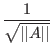
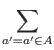

Next: Other Quantum Algorithms
Up: Quantum Algorithms
Previous: Overview of Shor's Algorithm
Contents
Shor's algorithm for factoring a given integer n can be broken into
some simple steps.
- Step 1
- Determine if the number n is a prime, a even number,
or an integer power of a prime number. If it is we will not use
Shor's algorithm. There are efficient classical methods for
determining if a integer n belongs to one of the above groups, and
providing factors for it if it is. This step would be performed on
a classical computer.
- Step 2
- Pick a integer q that is the power of 2 such that
n2
 q < 2n2. This step would be done on a classical
computer.
q < 2n2. This step would be done on a classical
computer.
- Step 3
- Pick a random integer x that is coprime to n. When
two numbers are coprime it means that their greatest common divisor
is 1. There are efficient classical methods for picking such an
x. This step would be done on a classical computer.
- Step 4
- Create a quantum register and partition it into two
parts, register 1 and register 2. Thus the state of our quantum
computer can be given by: |reg1, reg2
 . Register 1 must
have enough qubits to represent integers as large as q - 1.
Register 2 must have enough qubits to represent integers as large as
n - 1. The calculations for how many qubits are needed would be
done on a classical computer.
. Register 1 must
have enough qubits to represent integers as large as q - 1.
Register 2 must have enough qubits to represent integers as large as
n - 1. The calculations for how many qubits are needed would be
done on a classical computer.
- Step 5
- Load register 1 with an equally weighted superposition
of all integers from 0 to q - 1. Load register 2 with all zeros.
This operation would be performed by our quantum computer. The
total state of the quantum memory register at this point is:
- Step 6
- Now apply the transformation
xa mod n to for each
number stored in register 1 and store the result in register 2. Due
to quantum parallelism this will take only one step, as the quantum
computer will only calculate
x| a
 mod n, where
| a is the superposition of states created in step 5. This
step is performed on the quantum computer. The state of the quantum
memory register at this point is:
mod n, where
| a is the superposition of states created in step 5. This
step is performed on the quantum computer. The state of the quantum
memory register at this point is:
- Step 7
- Measure the second register, and observe some value k.
This has the side effect of collapsing register one into a equal
superposition of each value a between 0 and q - 1 such that
xa mod n = k
This operation is performed by the quantum computer. The state
of the quantum memory register after this step is:
|
a',
k
- Step 8
- Now compute the discrete Fourier transform on register
one. The discrete Fourier transform when applied to a state
| a changes it in the following manner:
This step is performed by the quantum computer in one step
through quantum parallelism. After the discrete Fourier transform our
register is in the state:
- Step 9
- Measure the state of register one, call this value m,
this integer m has a very high probability of being a multiple of
q/r, where r is the desired period. This step is performed by
the quantum computer.
- Step 10
- Take the value m, and on a classical computer do some
post processing which calculates r based on knowledge of m and
q. In particular:
- m has a high probability of being =
 *(q/r) where is an integer
*(q/r) where is an integer
- If we perform floating point division of m/q, and then calculate the best rational approximation to m/q whose denominator is less than or equal to q
- We take this denominator to be a candidate for r.
- If our candidate r is odd we either double it if doing so leads to a value less than q
There are efficient ways to do this post processing on a classical
computer.
- Step 11
- Once you have attained r, a factor of n can be
determined by taking
gcd(xr/2 + 1, n) and
gcd(xr/2 - 1, n).
If you have found a factor of n, then stop, if not go to
step 4. This final step is done on a classical computer.
Step 11 contains a provision for what to do if Shor's algorithm failed
to produce factors of n. There are a few reasons why Shor's
algorithm can fail, for example the discrete Fourier transform could
be measured to be 0 in step 9, making the post processing in step 10
impossible. The algorithm will sometimes find factors of 1 and n,
which is not useful either. For these reasons step 11 must be able to
jump back to step 4 to start over. (Williams, Clearwater)
Next: Other Quantum Algorithms
Up: Quantum Algorithms
Previous: Overview of Shor's Algorithm
Contents
Matthew Hayward - Quantum Computing and Shor's Algorithm GitHub Repository